Color in Windows
Windows employs color to help users focus on their tasks by indicating a visual hierarchy and structure between user interface elements. Color is context appropriate and used to provide a calming foundation, subtly enhancing user interactions and emphasizing significant items only when necessary.
Tip
This article describes how the Fluent Design language is applied to Windows apps. For more information, see Fluent Design - Color.
Color modes
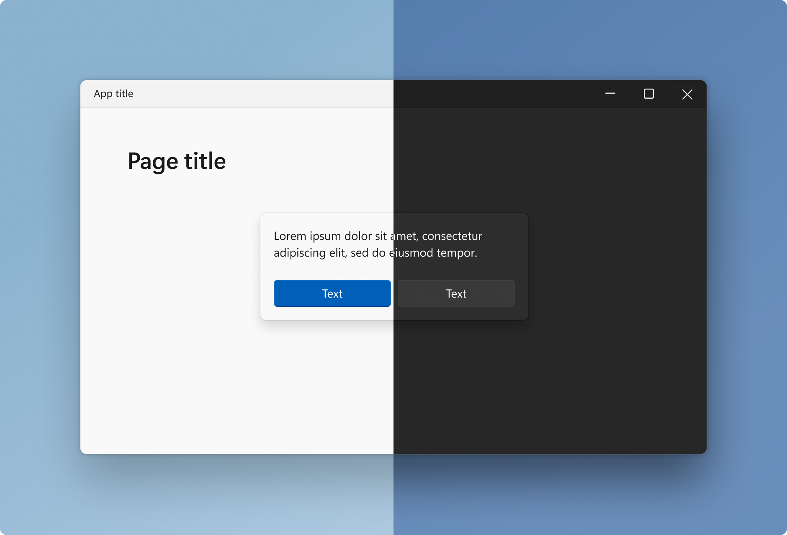
Windows supports two color modes, or themes: light and dark. Each mode consists of a set of neutral color values that are automatically adjusted to ensure optimal contrast.
In both light and dark color modes, darker colors indicate background surfaces of less importance. Important surfaces are highlighted with lighter and brighter colors. See layering & elevation for more information.
Accent color
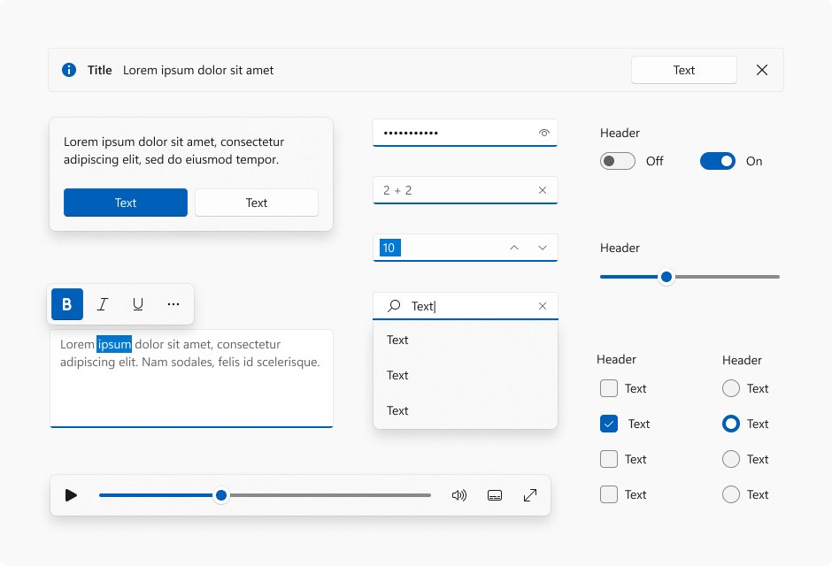
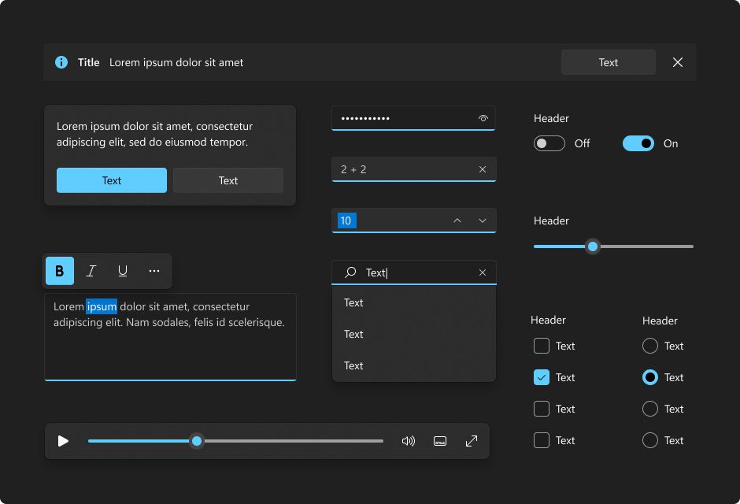
Accent color is used to emphasize important elements in the user interface and to indicate the state of an interactive object or control. Accent color values are generated automatically and optimized for contrast in both light and dark modes. Accent colors are used sparingly to highlight important elements and convey information about an interactive element's state.
Examples
The WinUI 3 Gallery app includes interactive examples of most WinUI 3 controls, features, and functionality. Get the app from the Microsoft Store or get the source code on GitHub
Color in Windows apps
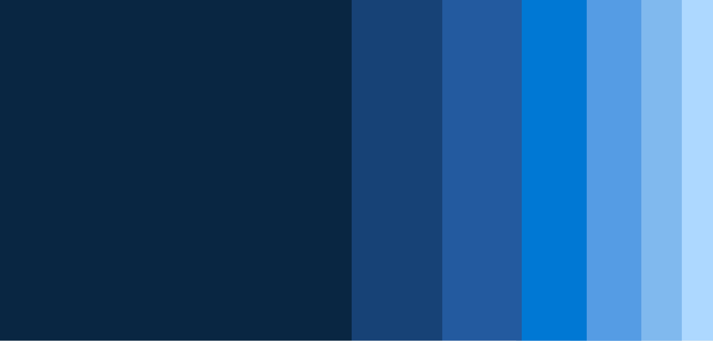
Color provides an intuitive way of communicating information to users in your app: it can be used to indicate interactivity, give feedback to user actions, and give your interface a sense of visual continuity.
In Windows apps, colors are primarily determined by accent color and theme. In this article, we'll discuss how you can use color in your app, and how to use accent color and theme resources to make your Windows app usable in any theme context.
Color principles
Use color meaningfully. When color is used sparingly to highlight important elements, it can help create a user interface that is fluid and intuitive.
Use color to indicate interactivity. It's a good idea to choose one color to indicate elements of your application that are interactive. For example, many web pages use blue text to denote a hyperlink.
Color is personal. In Windows, users can choose an accent color and a light or dark theme, which are reflected throughout their experience. You can choose how to incorporate the user's accent color and theme into your application, personalizing their experience.
Color is cultural. Consider how the colors you use will be interpreted by people from different cultures. For example, in some cultures the color blue is associated with virtue and protection, while in others it represents mourning.
Themes
Windows apps can use a light or dark application theme. The theme affects the colors of the app's background, text, icons, and common controls.
Light theme
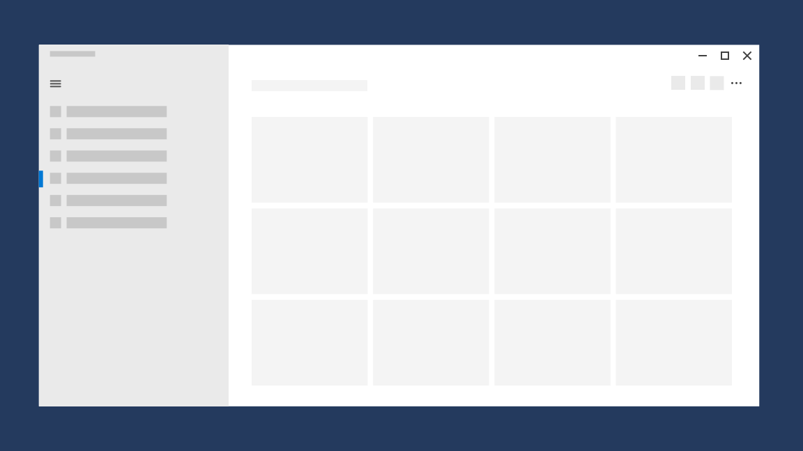
Dark theme
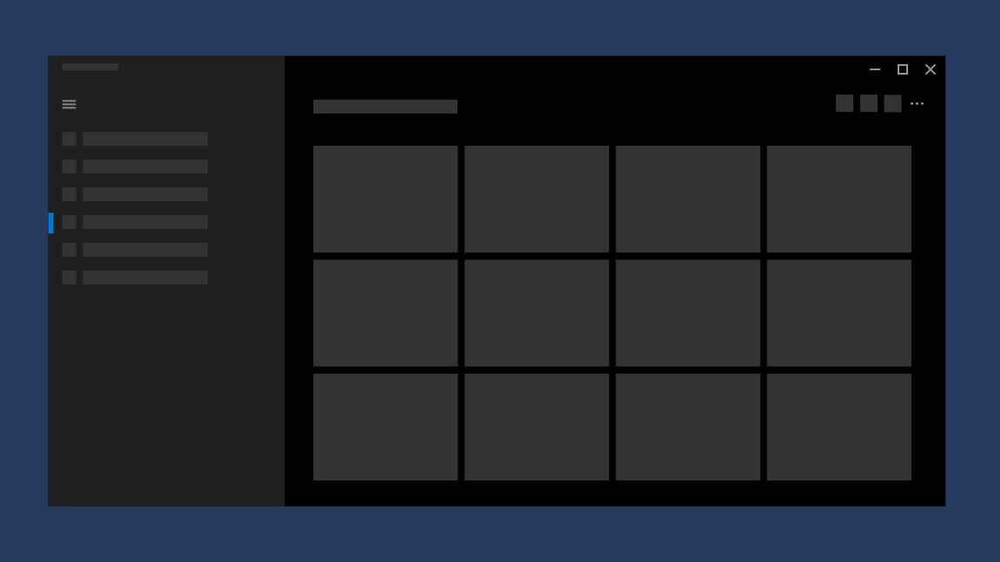
By default, your Windows app's theme is the user’s theme preference from Windows Settings or the device's default theme. However, you can set the theme specifically for your Windows app.
Changing the theme
You can change themes by changing the RequestedTheme property in your App.xaml file.
<Application
x:Class="App9.App"
xmlns="http://schemas.microsoft.com/winfx/2006/xaml/presentation"
xmlns:x="http://schemas.microsoft.com/winfx/2006/xaml"
xmlns:local="using:App9"
RequestedTheme="Dark">
</Application>
Removing the RequestedTheme property means that your application will use the user’s system settings.
Users can also select the high contrast theme, which uses a small palette of contrasting colors that makes the interface easier to see. In that case, the system will override your RequestedTheme.
Testing themes
If you don't request a theme for your app, make sure to test your app in both light and dark themes to ensure that your app will be legible in all conditions.
Theme brushes
Common controls automatically use theme brushes to adjust contrast for light and dark themes.
For example, here's an illustration of how the AutoSuggestBox uses theme brushes:
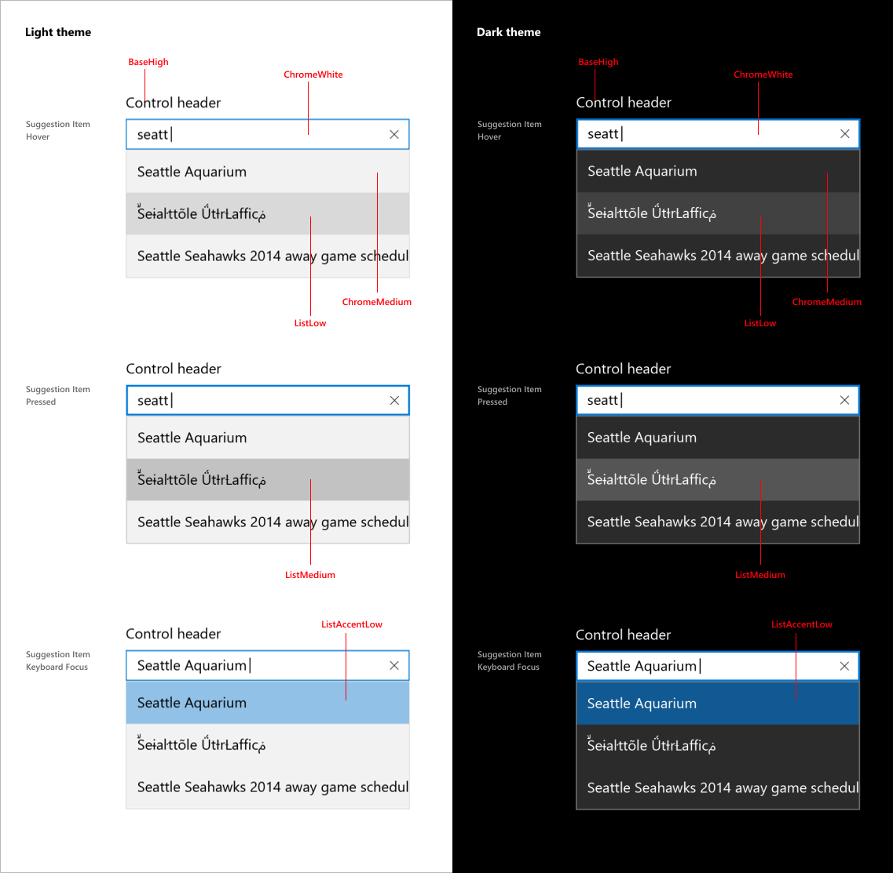
Using theme brushes
When creating templates for custom controls, use theme brushes rather than hard code color values. This way, your app can easily adapt to any theme.
For example, these item templates for ListView demonstrate how to use theme brushes in a custom template.
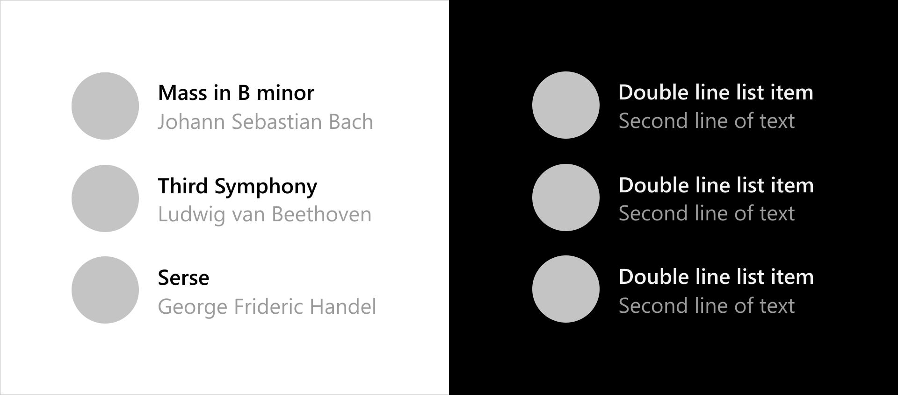
<ListView ItemsSource="{x:Bind ViewModel.Recordings}">
<ListView.ItemTemplate>
<DataTemplate x:Name="DoubleLineDataTemplate" x:DataType="local:Recording">
<StackPanel Orientation="Horizontal" Height="64" AutomationProperties.Name="{x:Bind CompositionName}">
<Ellipse Height="48" Width="48" VerticalAlignment="Center">
<Ellipse.Fill>
<ImageBrush ImageSource="Placeholder.png"/>
</Ellipse.Fill>
</Ellipse>
<StackPanel Orientation="Vertical" VerticalAlignment="Center" Margin="12,0,0,0">
<TextBlock Text="{x:Bind CompositionName}" Style="{ThemeResource BodyStrongTextBlockStyle}" Foreground="{ThemeResource TextFillColorPrimaryBrush}" />
<TextBlock Text="{x:Bind ArtistName}" Style="{ThemeResource BodyTextBlockStyle}" Foreground="{ThemeResource TextFillColorTertiaryBrush}"/>
</StackPanel>
</StackPanel>
</DataTemplate>
</ListView.ItemTemplate>
</ListView>
For more information about how to use theme brushes in your app, see Theme Resources.
Accent colors
Common controls use an accent color to convey state information. By default, the accent color is the SystemAccentColor that users select in their Settings. However, you can also customize your app's accent color to reflect your brand.
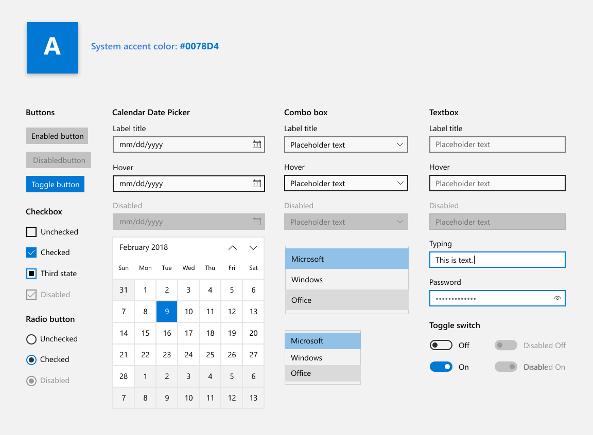
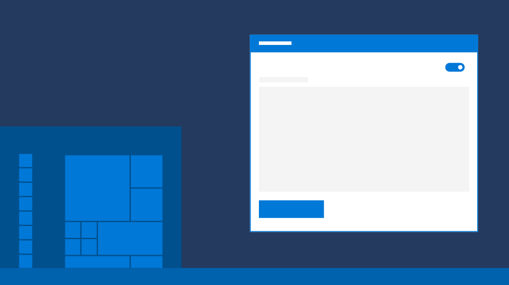
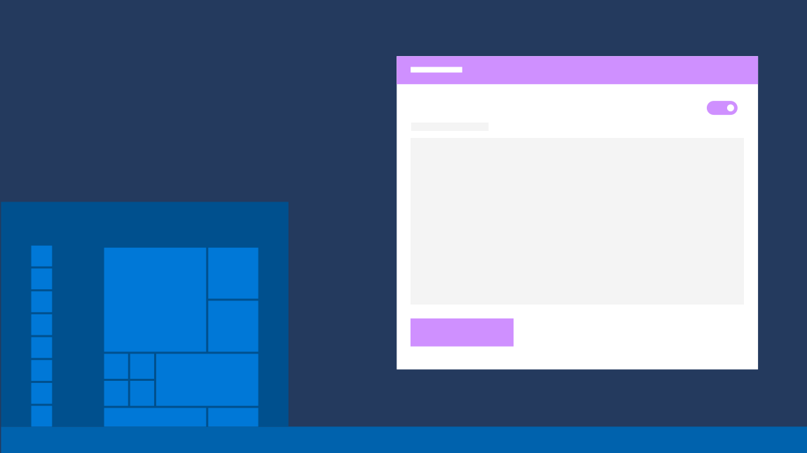
Overriding the accent color
To change your app's accent color, place the following code in app.xaml.
<Application.Resources>
<ResourceDictionary>
<Color x:Key="SystemAccentColor">#107C10</Color>
</ResourceDictionary>
</Application.Resources>
Choosing an accent color
If you select a custom accent color for your app, please make sure that text and backgrounds that use the accent color have sufficient contrast for optimal readability. To test contrast, you can use the color picker tool in Windows Settings, or you can use these online contrast tools.
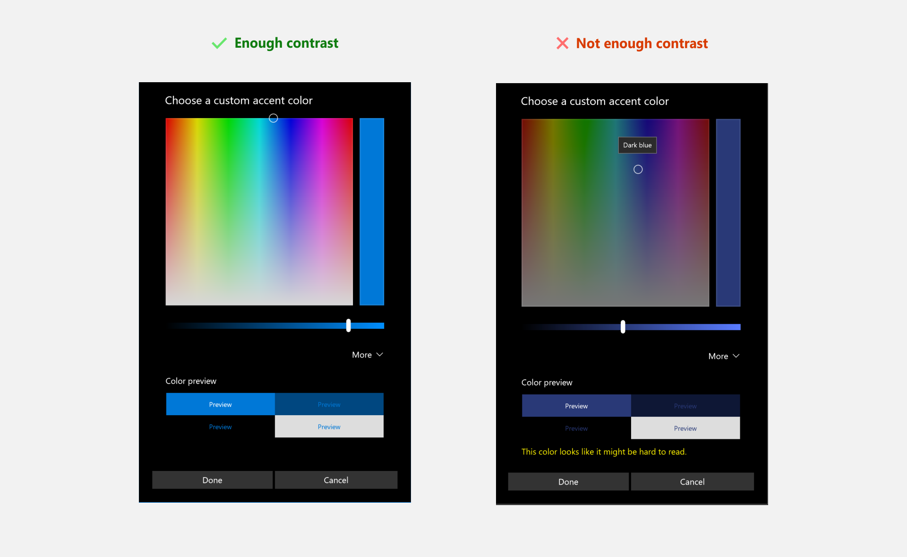
Accent color palette
An accent color algorithm in the Windows shell generates light and dark shades of the accent color.
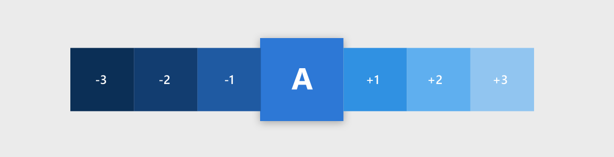
These shades can be accessed as theme resources:
SystemAccentColorLight3SystemAccentColorLight2SystemAccentColorLight1SystemAccentColorDark1SystemAccentColorDark2SystemAccentColorDark3
You can also access the accent color palette programmatically with the UISettings.GetColorValue method and UIColorType enum.
You can use the accent color palette for color theming in your app. Below is an example of how you can use the accent color palette on a button.
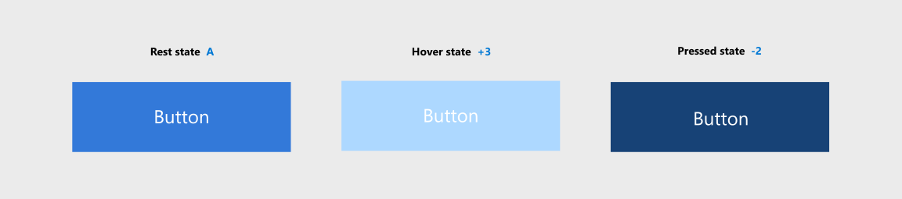
<Page.Resources>
<ResourceDictionary>
<ResourceDictionary.ThemeDictionaries>
<ResourceDictionary x:Key="Light">
<SolidColorBrush x:Key="ButtonBackground" Color="{ThemeResource SystemAccentColor}"/>
<SolidColorBrush x:Key="ButtonBackgroundPointerOver" Color="{ThemeResource SystemAccentColorLight1}"/>
<SolidColorBrush x:Key="ButtonBackgroundPressed" Color="{ThemeResource SystemAccentColorDark1}"/>
</ResourceDictionary>
</ResourceDictionary.ThemeDictionaries>
</ResourceDictionary>
</Page.Resources>
<Button Content="Button"></Button>
When using colored text on a colored background, make sure there is enough contrast between text and background. By default, hyperlink or hypertext will use the accent color. If you apply variations of the accent color to the background, you should use a variation of the original accent color to optimize the contrast of colored text on a colored background.
The chart below illustrates an example of the various light/dark shades of accent color, and how colored type can be applied on a colored surface.
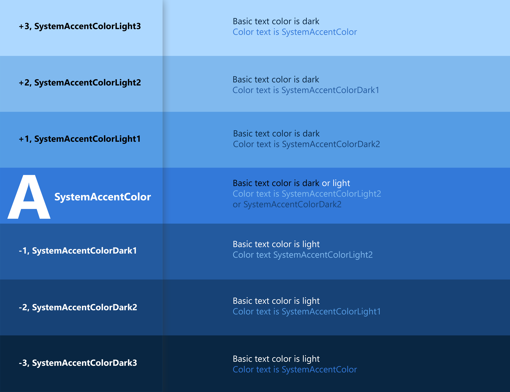
For more information about styling controls, see XAML styles.
Color API
There are several APIs that can be used to add color to your application. First, the Colors class, which implements a large list of predefined colors. These can be accessed automatically with XAML properties. In the example below, we create a button and set the background and foreground color properties to members of the Colors class.
<Button Background="MediumSlateBlue" Foreground="White">Button text</Button>
You can create your own colors from RGB or hex values using the Color struct in XAML.
<Color x:Key="LightBlue">#FF36C0FF</Color>
You can also create the same color in code by using the FromArgb method.
Color LightBlue = Color.FromArgb(255,54,192,255);
Windows::UI::Color LightBlue = Windows::UI::ColorHelper::FromArgb(255,54,192,255);
The letters "Argb" stands for Alpha (opacity), Red, Green, and Blue, which are the four components of a color. Each argument can range from 0 to 255. You can choose to omit the first value, which will give you a default opacity of 255, or 100% opaque.
Note
If you're using C++, you must create colors by using the ColorHelper class.
The most common use for a Color is as an argument for a SolidColorBrush, which can be used to paint UI elements a single solid color. These brushes are generally defined in a ResourceDictionary, so they can be reused for multiple elements.
<ResourceDictionary>
<SolidColorBrush x:Key="ButtonBackgroundBrush" Color="#FFFF4F67"/>
<SolidColorBrush x:Key="ButtonForegroundBrush" Color="White"/>
</ResourceDictionary>
For more information on how to use brushes, see XAML brushes.
Usability
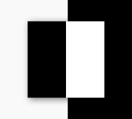
Contrast
Make sure that elements and images have sufficient contrast to differentiate between them, regardless of the accent color or theme.
When considering what colors to use in your application, accessibility should be a primary concern. Use the guidance below to make sure your application is accessible to as many users as possible.
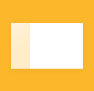
Lighting
Be aware that variation in ambient lighting can affect the usability of your app. For example, a page with a black background might unreadable outside due to screen glare, while a page with a white background might be painful to look at in a dark room.
Colorblindness
Be aware of how colorblindness could affect the usability of your application. For example, a user with red-green colorblindness will have difficulty distinguishing red and green elements from each other. About 8 percent of men and 0.5 percent of women are red-green colorblind, so avoid using these color combinations as the sole differentiator between application elements.